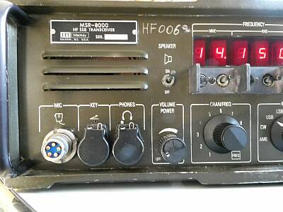 |
このMSR-8000には、いくつかのバージョンがあるようです
・カラーリング
・MIC端子以外の端子形状、リアパネル形状
今回入手できたものは、ご覧のようなカラーリングで、KEYとPHONES端子が単独でフロントパネルに用意があるモデルです
本機は、フロントパネルにスピーカーが用意されています
U-229/UコネクタのPRC用のハンドセットでも動作確認が出来ました |
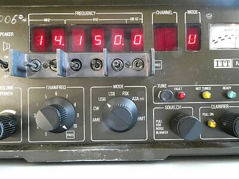 |
周波数の設定・変更には、中立のトグルスイッチが使用してあります
中立で、上下跳ね返りして戻るタイプです（センターオフ、両側モメンタリー）
０～９９KHｚの間は、連続して可変できます
１００Hzステップ以下は、受信に限りクラリファイヤボリュームで可変できます（±２５０Ｈｚ）
メモリは、モードを含め10個まで登録可能
CHANNEL表示窓に、その数字が表示されます
対応モードは、AME、CW、USB、LSB、FSK、A3A
受信フィルタは、AM（５～７KHｚ）・SSB（２．７KHｚ）用のみで、CW用フィルタの内臓はありません |
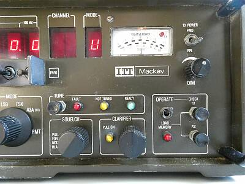 |
Sメータは、ｄｂμV表示
一般で言うS9あたりは、40ｄｂμVの目盛です
メータ内の赤LEDは、送信表示
ＴＵＮＥ
アンテナカプラーはありませんので未使用
右の四角の枠内は、メモリセット用のもの
SQUELCHは、ボリュームを引くとNBがONです
CLARIFIERも引くことでONになります（PULL ON表示LED） |
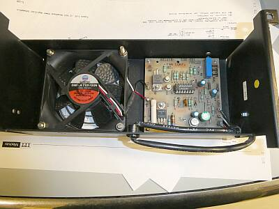
元々オプションであった強制冷却ファンの中身です |
今回、一番に見つけたトラブル
それは強制冷却ファンが、通電と同時に回りだすこと
電源ONではなく、単にDCケーブルを電源に接続するだけで回り始めます
原因は、基板中央に見えるICの故障でした
コンパレータです
回路は、このコンパレータを使って12V/24Vいずれの本体モデルであっても同じオプションで対応できるよう上手く作られています（ファン直列抵抗のＯＮ／ＯＦＦ）
サーミスタが60℃を検知したら回り始めるようにスレッシホールドを設定、です
関係してサーミスタ周りに断線が見つかりました |
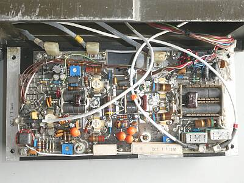 |
こちらが１２５Wのファイナルユニットです
|
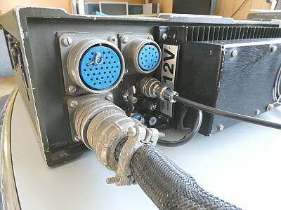 |
モデルとして、１２V/２４Vの2つがあるようですが、このものは１２Vモデルです
ヒートシンク横に「１２V」と大きく表されたラベルが貼ってあります
接続されているのは、DCケーブル
大きな青のコネクタは、アンテナカプラー接続端子
現在は、錫メッキ線で必要なジャンパがしてありますが、コネクタ（MS3106A28-21P）を手配中で、入手出来次第ダミープラグとして使用します
奥に見える小さな青のコネクタは、リモコン接続端子 |
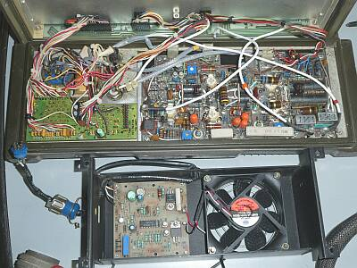 |
リアパネルの内側です
左に見える変わった形状のコネクタで冷却ファンオプションと接続
冷却ファンの取り付けは、ヒートシンクの取付ビスをそのまま使用です |
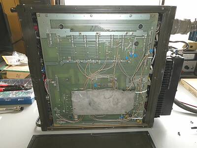 |
シャーシ底面
底板を取り外した様子
大きなマザーボードです
大きなマザーボードの支え・・・ゴム足が用意されています |
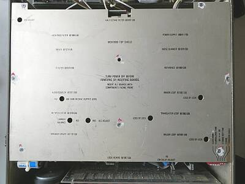 |
上パネルを外したところ
大きな1枚のシールド板で覆われています
頻繁に調整されるであろうと思われる箇所には、名称がプリントされています |
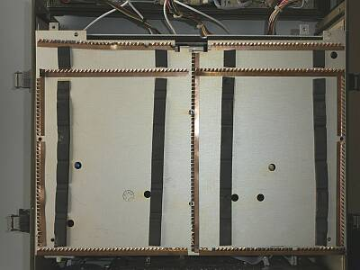 |
上写真のシールド板の裏側
スペアナ並みのシールド補強がしてあります |
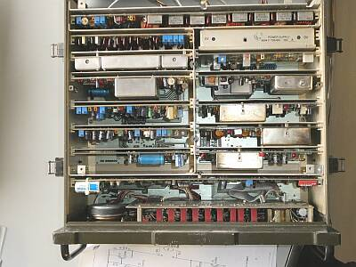 |
シールド板を外したところ
12個のユニット＋で構成されています |
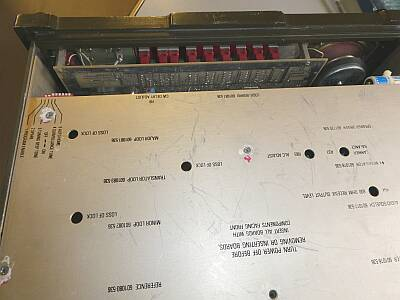 |
フロントパネル 正面中央/表示部の裏側
7セグメントLEDをスタンド（赤色の台）を使って持ち上げて取り付けています |
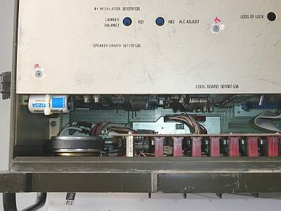 |
フロントパネル 正面向かって左側の裏を上から
メモリ・バックアップ電池は、CR123Aです
スピーカーの音色ですが､上カバーでスピーカー背面を密閉することで、落ち着いた音色が得られます
フロントパネルから目で見る以上に良い音がします
小さなスピーカーで意外といい音・・・ＩＣ-７０５のイメージかな |
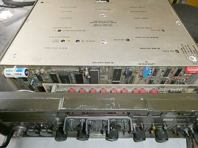 |
このCR-123Aが載っているボードがロジック・ボードです
フロントパネルに取り付いているのは、ディスプレイ・ボードです |
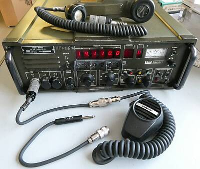 |
マイクロホン
H-229/Uプラグのついた変換ケーブルが、本体に付属していました（前オーナー作？反対側はMIC-7P）
Mackayでは、SHUREのModel５２７A あるいはノイズキャンセル型のModel４８８Tというハンドマイクを純正としていたようです
別途入手したModel５２７Aに対して、付属していた変換ケーブルからコネクタを拝借して、Collinsなどと差し替えて使えるように（ＰＪ-０６８対応）、変換ケーブル２本を作ってみました
マイク側は、ＴＲＩＯ仕様４Ｐです
High-Zのマイクロホンは、最近では貴重ですから・・・ |
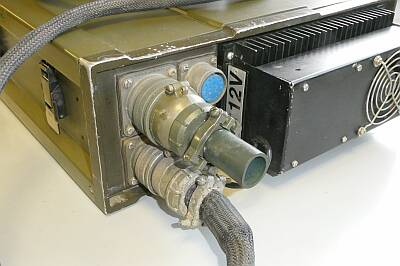 |
コネクタ（MS3106A28-21P）を入手
いわゆるダミープラグです
槌より柄の方が重い？？？
10枚上の写真と比べてみて下さい
アンテナカプラーを使用せずに送信するために必要なジャンパ配線を行ったプラグです
|
|
実際にアンテナをつないで受信をしてみたところ、なかなか好みの音がします
音量を上げても問題にならない良い音です（HiFiというつもりはありません、通信という目的において）
受信する相手の電波の特徴が良く分かるよう再現します
大音量での受信に耐える・・・アマチュア無線機器との違いを感じます
一般的なダイヤルを回して…という運用（選局）スタイルとは全く異なりますが、昨今のことで１ＫＨｚステップのＵｐ／Ｄｏｗｎのみで結構実用になることが良く分かります
ロールコール的な運用には、まさに適しています
ＳＨＵＲＥのModel５２７Aマイクロホンを使ってPhoneの送信テスト
エアバンドで、よく耳にするような音色です、まさに通信の音・・・
３KHｚ上あたりに特徴的なピークを持つこのマイクの特性と、本体のもつコンプレッション機能の合わさった結果と思われます
トークパワーも随分出ます（平均値表示のパワー計の針が大きく振れます）
余談ですが、本マイクロホン・・・我々の手にとってはサイズの大きなハンドマイクです！ |
いつものパターンによる計測です
| ＢＡＮＤ（ＭＨｚ） |
ＡＭ
３０％ １ＫＨｚ 変調ＯＮ／ＯＦＦで
S/N１０ｄｂが得られる信号強度 |
ビート受信（ＣＷ／ＳＳＢ）
ＲＦ信号のＯＮ／ＯＦＦで
S/N１０ｄｂが得られる信号強度 |
| １．９１０ |
８．０μV |
１．０μV |
| ３．６００ |
３．０μV |
０．４μV |
| ７．１００ |
３．０μV |
０．３５μV |
| １４．２００ |
２．５μV |
０．２５μＶ |
| ２１．２００ |
２．５μＶ |
０．２５μＶ |
| ２８．５００ |
４．０μＶ |
０．５μＶ |
スペックでは、ＳＳＢ：０．５μV時S/N１０ｄｂ ＡＭ：３μV時S/N１０ｄｂ となっています
送信出力 モード：CW時 １００～１２０W前後（現状）
この時の消費電流は、１９A～２６A程度、バンドによって差があります（仕様上は３０Aを要求） |